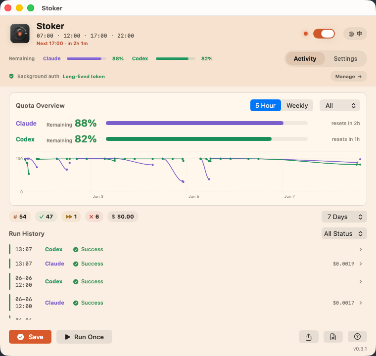

Fixed start times
Pick the hours that match your day; each time fires independently.
Keep the fire lit.
A tiny macOS launchd scheduler that sends low-cost check-ins at the times you choose — then logs every run, token, and quota snapshot. Runs entirely on your Mac.

If the first prompt of a window lands late, the whole window shifts late. Stoker fires a tiny check-in at fixed times so your windows open when you actually start working.
Pick the hours that match your day; each time fires independently.
Five-hour and weekly snapshots recorded after every run.
Quota preflight skips a tool gracefully instead of wasting a call.
Every run is the same calm, four-beat loop.
Reads .env, then takes a lock so concurrent triggers skip safely.
Checks quota before sending. Exhausted tools are skipped and logged.
Each CLI gets a tiny check-in, kept to its own folder — no tools run, your real projects never touched.
Appends usage + quota snapshots, then releases the lock for next time.
# clone, configure, and light the pilot
$ git clone https://github.com/hakupao/stoker.git
$ cd stoker && cp .env.example .env
$ ./install.sh check
$ ./install.sh dry-run # shows commands, sends nothing
$ ./install.sh ✓ schedule loaded · next run 12:00Triggers Claude Code and Codex through macOS launchd at the times you set.
Each check-in stays tiny and read-only, kept to its own folder — never your real projects.
Every activation in plain text at logs/activation.log.
Structured token and cost rows in logs/usage.jsonl.
Five-hour and weekly quota status in logs/status.jsonl.
Skips activation gracefully when a known quota is exhausted.
Schedule, tools, prompts, timeouts and paths — all in one .env.
Stoker sends real prompts, so it uses real quota. Here is exactly how much.
≈ $0.16 / month for Claude at 4 activations a day.
A native menu bar app over the same engine — bilingual, light or dark.
Not affiliated with, endorsed, or sponsored by Anthropic, OpenAI, or Apple. Stoker uses your real quota; you are responsible for complying with each provider's terms.
About $0.001 per Claude activation (~170 tokens). Roughly $0.16/month at four runs a day. Codex uses your plan quota.
Yes — it sends real prompts. That is the point. Quota preflight skips a tool when its quota is already exhausted.
No. It runs in its own folder with a tiny read-only check-in, and never reads or modifies your real projects. dry-run and quota send nothing.
No. Stoker is an independent open-source project, not affiliated with Anthropic, OpenAI, or Apple. You are responsible for following their terms.
Run ./install.sh uninstall (or use the menu bar app) to unload and remove the LaunchAgent.
Two ways to install — same scheduler underneath.
For most people. A GUI monitor + settings over the bundled engine.
Download .dmgAd-hoc signed — first launch needs Right-click ▸ Open (or System Settings ▸ Privacy ▸ Open Anyway).
For terminal users who want the lightest install and direct shell control.
git clone https://github.com/hakupao/stoker.git
cd stoker && cp .env.example .env
./install.shKeep the fire lit.